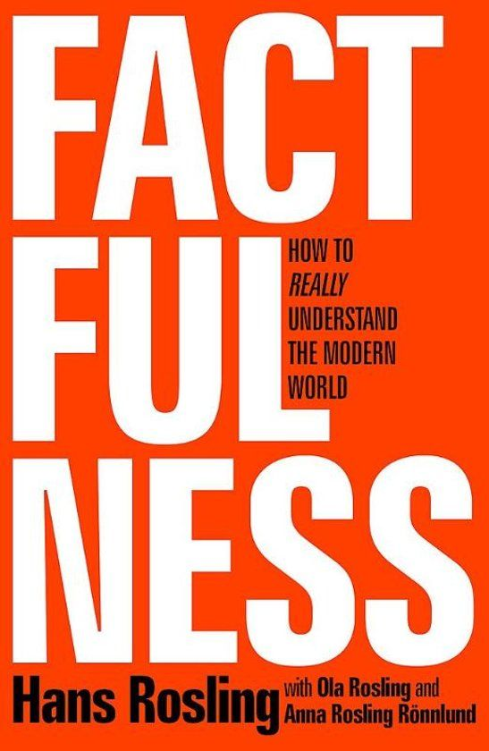

It turns out that the world, for all its imperfections, is in a much better state than we might think.
That doesn't mean there aren't real concerns.
But when we worry about everything all the time instead of embracing a worldview based on facts,
we can lose our ability to focus on the things that threaten us most.